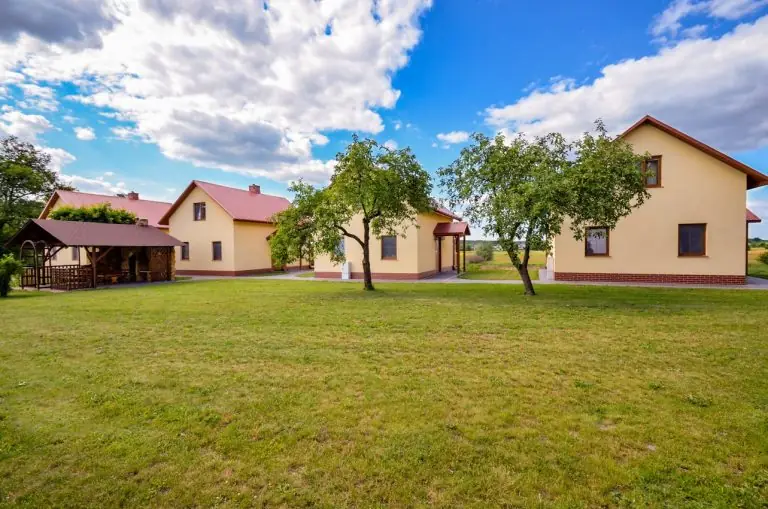
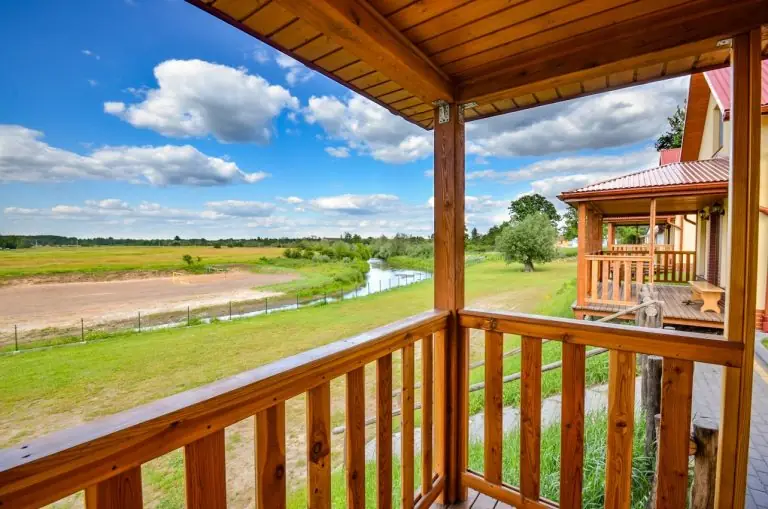
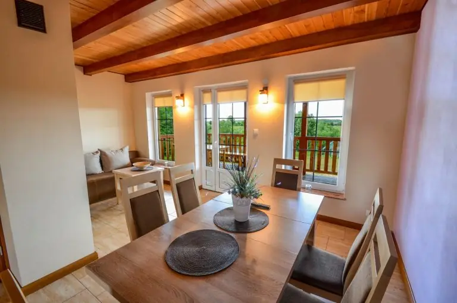
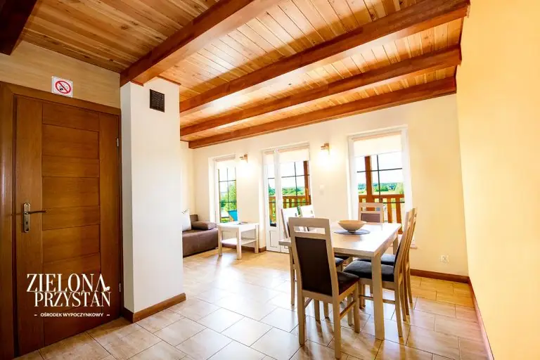
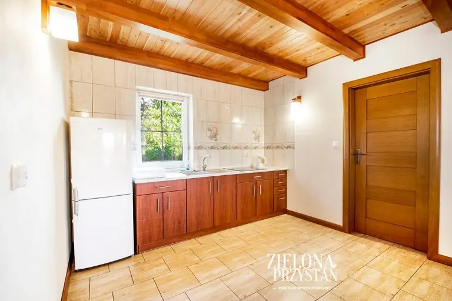
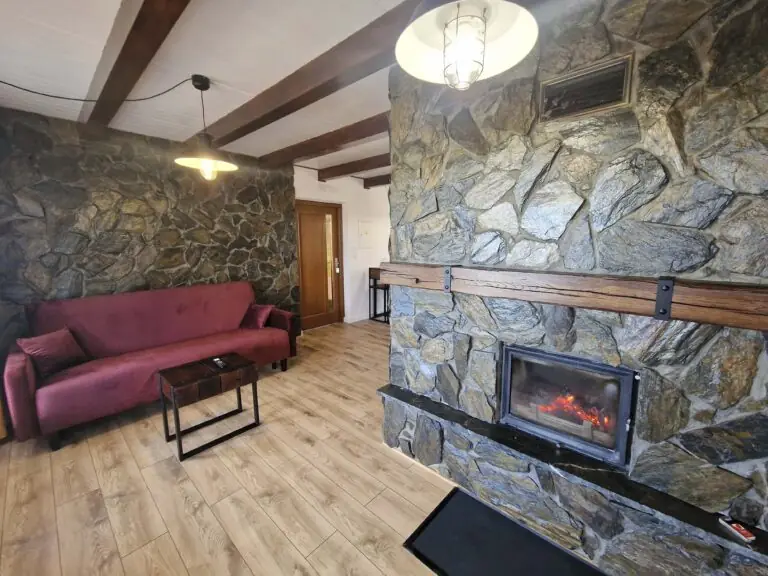
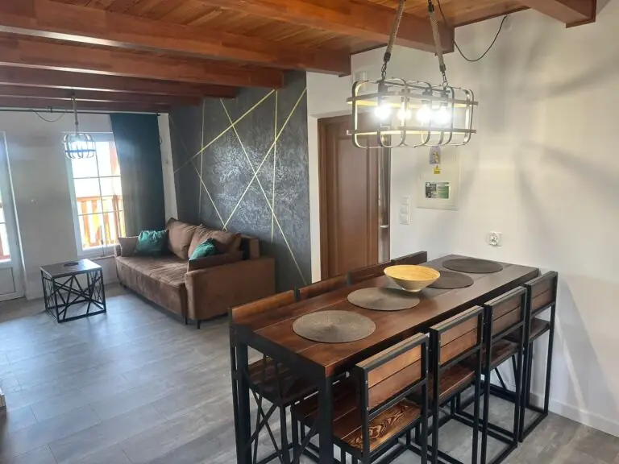
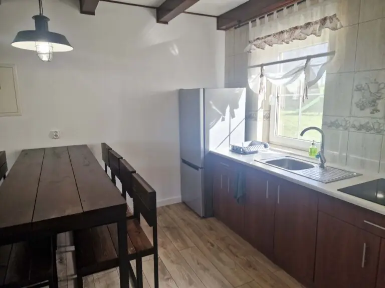
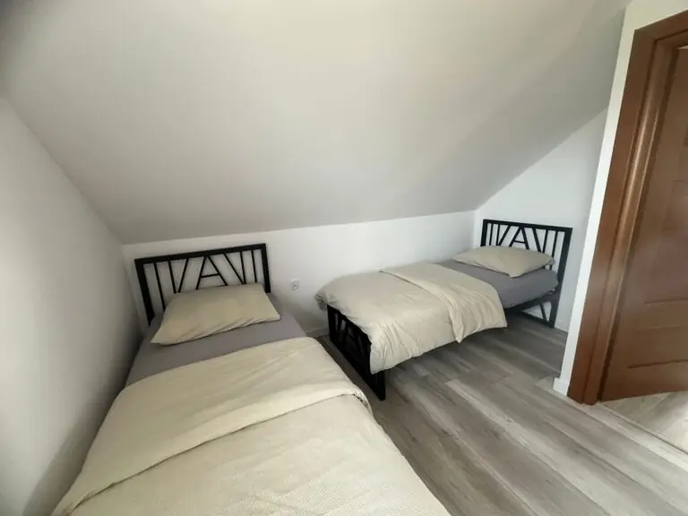
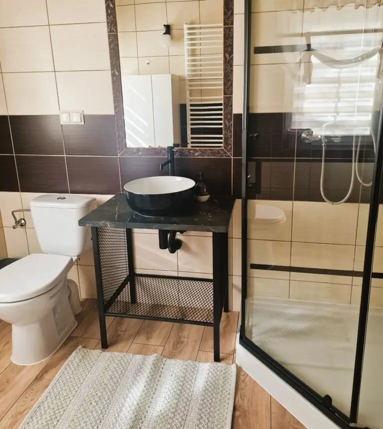

Domki całoroczne
8 osób w każdym domku
Na parterze aneks kuchenny połączony z jadalnią i salonem z kominkiem oraz łazienka z prysznicem. Na piętrze dwa pokoje, w każdym łóżko podwójne i pojedyncze.
- zadaszony taras z widokiem na rzekę
- duża lodówka, czajnik, naczynia, garnki i patelnie
- wynajem na minimum 2 doby